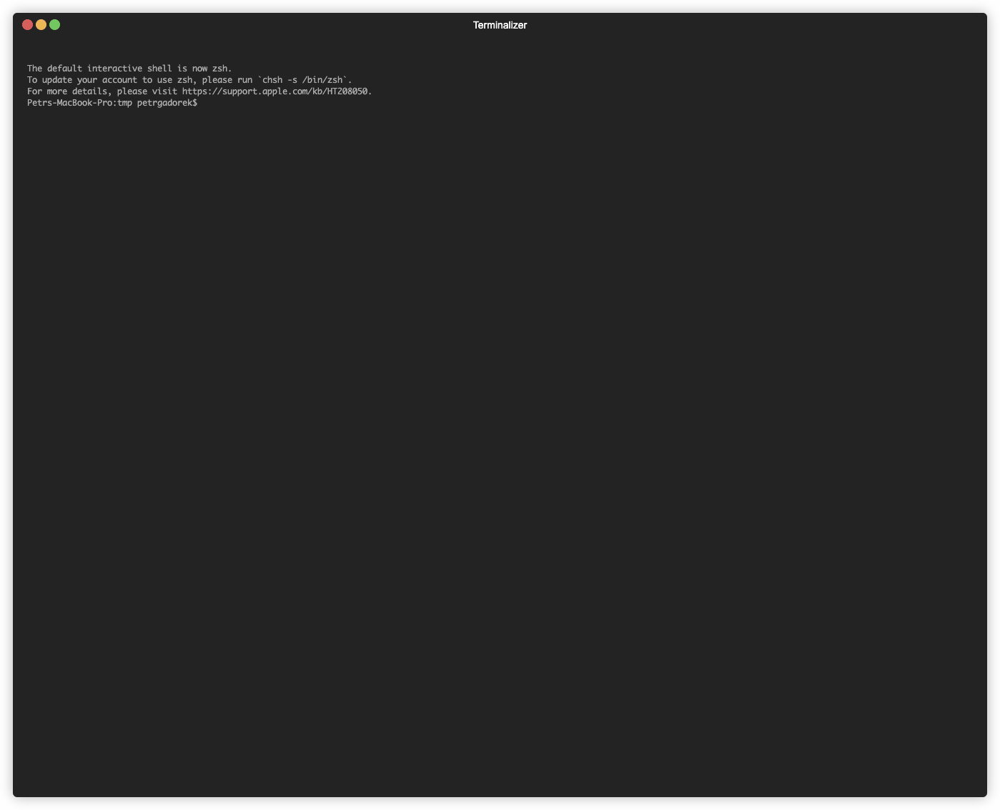
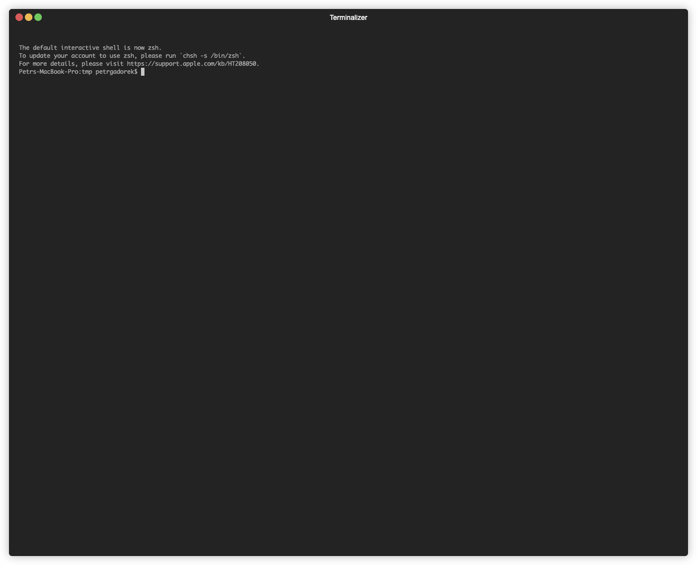

Nový
ESP-IDF Installation Manager
Rádi bychom vám představili nový instalátor IDF jménem
EIM
Jde o jedno z prvních vydání a rádi bychom získali zpětnou vazbu od prvních uživatelů
Jde o multiplatformní CLI nástroj

Každý parametr lze nastavit jako CLI argument
Usage: idf-im-cli [OPTIONS]
Options:
-c, --config
-t, --target
-i, --idf-versions
--tool-download-folder-name
--tool-install-folder-name
--idf-tools-path
Path to tools.json file relative from ESP-IDF installation folder
--tools-json-file
Path to idf_tools.py file relative from ESP-IDF installation folder
-n, --non-interactive
[possible values: true, false]
-m, --mirror
url for download mirror to use instead of github.com
--idf-mirror
url for download mirror to use instead of github.com for downloading esp-idf
-v, --verbose...
Increase verbosity level (can be used multiple times)
-l, --locale
Set the language for the wizard (en, cn)
--log-file
file in which logs will be stored (default: eim.log)
-h, --help
Print help (see a summary with '-h')
-V, --version
Print version
Můžete poskytnout konfigurační soubor
```toml
path = "/tmp/esp-new/"
idf_path = "/tmp/esp-new/v5.3/esp-idf"
tool_download_folder_name = "dist"
tool_install_folder_name = "tools"
target = ["all"]
idf_versions = ["v5.3"]
tools_json_file = "tools/tools.json"
idf_tools_path = "./tools/idf_tools.py"
mirror = "https://github.com"
idf_mirror = "https://github.com"
```
Snadné použití
Jednoduchý průvodce vás provede procesem instalace
Vícejazyčnost
CLI aplikace je k dispozici v angličtině a čínštině a seznam jazyků lze snadno rozšířit
CLI 应用既可以用英语和中文来交互，并且语言列表是很容易扩展的
Prosím, jakékoli problémy nahlaste jako GitHub issues
Releasy:
Dokumentace:
Děkujeme za pozornost